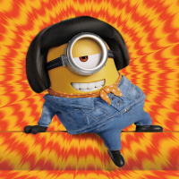

Rishi P
Student at SRM Institute of Science and Technology

Fast-Learning Innovator with a Passion for Tech! A go-getter with an insatiable desire to learn and grow. Pro at solving problems
and communicating ideas effectively. A disciplined self-starter, excelling both independently and in team settings. If you seek a
smart, driven individual with a knack for embracing new technologies, I'm your ideal fit!
Contact:
- Phone: +123 12345678
-
Socials:
- LinkedIn: xyz.com/abc
- GitHub: xyz.com/abc
- Email: emailme@email.com
Education
SRM Institute of Science and Technology (2021 to Present)
Course: B.Tech CSE w/s Al and ML
Worked as a competitive programmer in one of the most reputed college tech club.
CGPA: 9.283
Mahalakshmi Vidya Mandir (2020 to 2021)
HSC (12th Grade)
Result: 82%
Sudharsanam Vidyaashram (2018 to 2019)
SSC (10th Grade)
Result: 81%
Primary Skills
- Python (Expert)
- C++ and C (Expert)
- Data structures and Algorithms (Expert)
- Object oriented programming (Expert)
- Competitive programming (Proficient)
Personal Projects
- Flappy dragon the game:
- Tic Tac Toe:
Other Notable Skills
- Excellent proficiency in communication (particularly English and Tamil).
- Great desire for learning and a quick learner.
- Good at aptitude and excellent problem solving skills.
- Adept at working independently or in close collaboration.
- Passionate about technology especially new ones.
Languages Known:
- English: Full professional proficiency
- Tamil: Full professional proficiency
- Telugu: Elementary proficiency
Hobbies
- Working out in the gym: Energizing my body and mind, achieving new heights of strength and endurance.
- Swimming: Gliding through the water, finding tranquility and invigoration in each stroke.
- Video games: Unleashing my strategic prowess and creativity, diving into immersive worlds of endless possibilities.